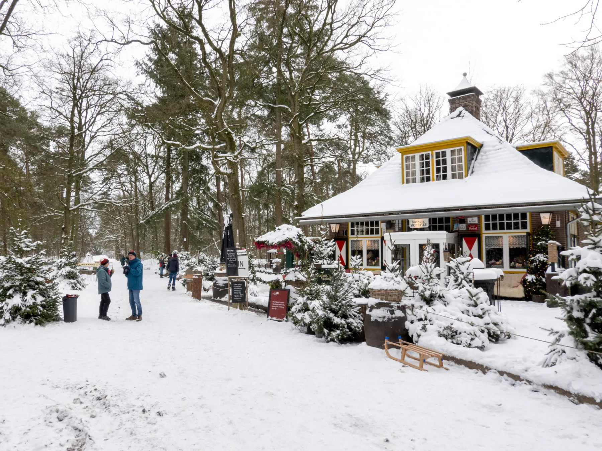
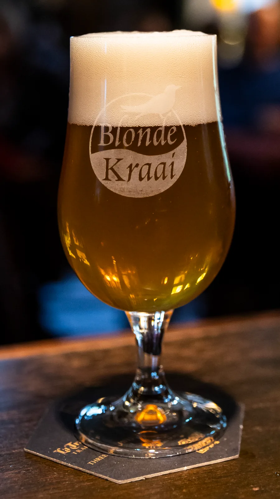
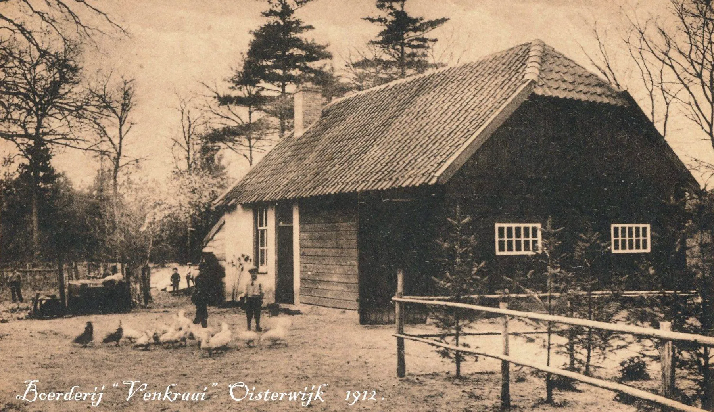
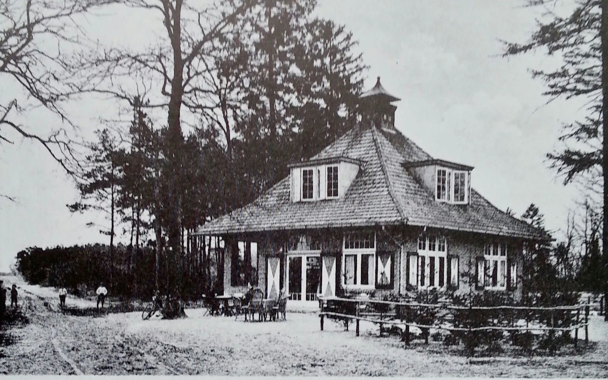
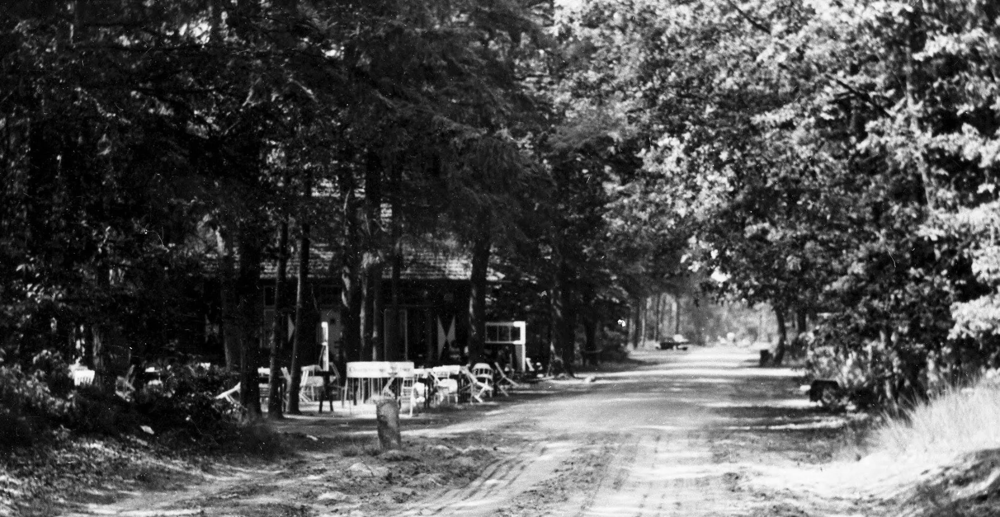
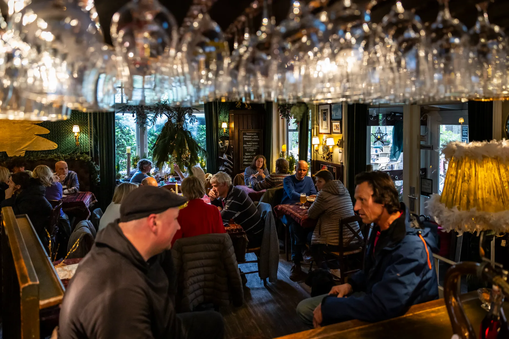
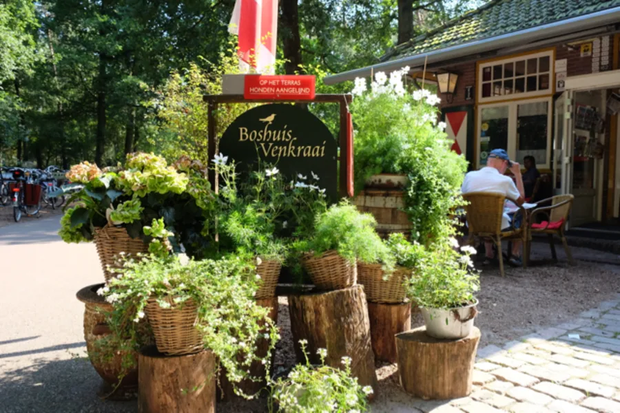

Een boshuis tussen de vennen
Al meer dan honderd jaar schenkt deze oude boswachterswoning koffie, bier en een goede hap voor wandelaars, fietsers en ruiters. Midden in de Oisterwijkse bossen.
Dagelijks open van 10.00 tot uiterlijk 19.00 Keuken tot 18.00, borrelhapjes tot 18.30.
Reserveren is niet mogelijk: loop gewoon binnen.
Welkom bij Boshuis Venkraai
De traditie van het gastheerschap is nu in handen van Judith en Bart. Op het ruim uitgezette bosterras en in het veelal nog authentieke café geniet je van een lekker drankje of een smakelijke lunch.
Het boshuis wordt veel genoemd bij fiets- en wandelknooppunten. Te midden van de bossen en vennen geniet je hier van de natuur, in alle jaargetijden. Voor kinderen is er een speeltuintje, voor de volwassenen een ruim assortiment speciaalbieren.
De Blonde Kraai Ons huisbier. Licht kruidig, blond en heerlijk.
Prijswinnaar De lunchkaart wisselt per seizoen, maar de huisgemaakte "beste gehaktbal" is het hele jaar te krijgen.
Elektrische fiets? Opladen kan, oplaadpunten zijn aanwezig. Voor ruiters is er een tijdelijke stalling.

De kaart
Geen culinaire hoogstandjes, maar goede en lekkere gerechten voor na je wandeling of fietstocht. Per seizoen zijn er specialiteiten, en op de krijtborden staan suggesties. Heb je een allergie? Meld het ons.
Dagelijks geopend tot uiterlijk 19.00 uur · keuken tot uiterlijk 18.00 uur
Kleine gerechten
- Oisterwijkse Winnaar9,95Huisgemaakte gehaktbal uit de jus met brood
- Boswachters Panneke15,50Heerlijke warme hap, geserveerd met boerenbrood
- Lunchplankje Venkraai12,75Boerenbrood met diverse soorten beleg
- Pasteitje met kippenragout9,50
- Saté met brood13,50
- Poffertjes4,9512 stuks met boter en poedersuiker
- Tosti ham en kaas3,20
- Tosti ham, kaas en ananas3,60
- Tosti ham en kaas, bruin waldkorn brood3,60
- Tosti ham, kaas en ananas, bruin waldkorn brood4,00
- Bakje salade3,50
Soep & salade
- Tomatensoep5,50
- Dagsoepdagprijs
- SeizoenssaladedagprijsHeerlijke salade met verse seizoensproducten
Boerenboterham wit of bruin
- Tonijnsalade, huisgemaakt8,95
- Oude Reypenaer kaas8,95Met stroop en rauwkostsalade
- Brie uit de oven9,25Met dadel-notentapenade
- Pulled chicken10,95Met bbq-saus en koolsalade
- Rundvleeskroketten (2)10,25Met mosterd
- Vegan groentekroketten (2)12,95Met vegan aioli
- Bietenhummus9,95Met geitenkaas, dadels en noten
- Wisselend broodje van het seizoendagprijs
- Glutenvrij brood, 2 sneetjes+1,50
Voor de kleintjes
- Snee brood4,50Met jam, Nutella, pindakaas of hagelslag
Bij de koffie
- Gebak van het momentdagprijs
- Vegan chocobrownie met sinaasappel5,95Gluten- en lactosevrij
- Krentenbrood3,202 sneetjes met roomboter
- Worstenbrood, warm3,20
- Vegan worstenbrood, warm4,70
- Glutenvrij worstenbrood, warm5,95
- Extra slagroom0,75
IJscoupe
- Roomijs met boerenjongens en slagroom6,50
- Roomijs met advocaat en slagroom6,50
- Roomijs met chocosaus (koud) en slagroom6,50
Borrelhapjes zijn te bestellen tot 18.30 uur.
Voor bij de borrel
- Bitterballen rundvlees, 8 stuks9,50
- Vegan bitterballen, 8 stuks10,50
- Vega kaaskrokantjes, 8 stuks8,75
- Snaaiplank Venkraai17,95Bitterbal, kaaskrokant, ham, worst, kaas, olijven, dips en brood
- Vegaplankje15,95Bitterbal, kaaskrokant, olijven, groentechips met dip, kaas, dadels en noten
- Broodmandje6,75Met kruidenboter en dip
- Nacho's kaas9,00Warm, met chilisaus en guacamole. Extra crème fraîche, uien en tomaat +2,75
- Nacho's pulled chicken13,95Kaas, uien en bbq-saus
- Kaas of worst4,00
- Bakje gemengde nootjes3,00
- Olijven3,00
- Zakje paprika- of naturelchips1,25
Koffie & thee
- Koffie2,80
- Koffie met slagroom3,45
- Cappuccino3,00
- Koffie verkeerd3,00
- Latte macchiato3,50
- Flat white3,80Dubbele espresso met gestoomde melk
- Espresso2,80
- Espresso macchiato2,90
- Decafé2,90
- Cappuccino decafé3,10
- Koffie verkeerd decafé3,10
- Thee, diverse smaken2,80
- Verse muntthee3,50
- Verse gemberthee3,50
Warm aan tafel
- Warme chocomel3,00
- Warme chocomel met slagroom3,75
- Warme chocomel met slagroom en rum6,25
- Glühwein3,50
- Venkraai Coffee6,75Met honingrum
- Irish Coffee6,75Whiskey, slagroom
- French Coffee6,75Grand Marnier
- Spanish Coffee6,75Tia Maria
- Italian Coffee6,75Amaretto
- Chouffe Coffee met slagroom5,75
- Schrobbelèr Coffee met slagroom6,75
Koude dranken flesje
- Chaudfontaine blauw of rood2,60
- Bitter Lemon, Tonic, Sinas, Sprite, Cassis2,75
- Coca-Cola regular of zero2,75
- Chocomel, Fristi2,75
- Ice tea regular of green2,75
- Tomatensap, appelsap, jus d'orange, Rivella2,90
- Gingerbeer3,80
- Crodino3,70
Van de tap speciaal voor Venkraai geselecteerd
- Blonde Kraai 6,5%, 25 cl5,40Licht kruidig, blond en heerlijk
- Fourchette 7,5%, 25 cl5,90
- Lindeboom Pilsener 5%, 20 cl3,00
- Lindeboom Pilsener, vaasje 25 cl3,10
- Lindeboom Pilsener, halve liter6,00
- La Trappe Dubbel 6,5%, 30 cl4,90
- Weihenstephaner Hefeweissbier 5,4%, 33 cl4,40
- Weihenstephaner Hefeweissbier, 50 cl6,50
- Wisselbieren van de tap, 25 clvraag ernaarOf kijk op de schoolborden
O' Wat ben je lekker gebrouwen door De Muifel brouwerij
- Oisterwijkse Boswachter 6%5,10
- Dölleke 9%5,10
- Lammerven 8%5,10
- Krabbenscheer 5%5,10
Trappisten op fles
- Chimay Bleu 9%, 33 cl5,60
- Chimay Dubbel4,90
- La Trappe Tripel4,90
- La Trappe Quadrupel5,30
- La Trappe Isid'or4,90
- La Trappe Wit4,70
- Orval5,20
- Rochefort 85,20
- Rochefort 105,70
- Westmalle Dubbel4,90
- Westmalle Tripel5,10
Abdijbieren op fles
- Achel Singel4,40
- Corsendonck Agnus4,90
- Corsendonck Pater4,70
- Paix Dieu5,50
- St. Bernardus Prior5,40
- St. Bernardus Abt5,40
- Val Dieu Tripel4,80
Nederlandse & buitenlandse bieren
- Boon Geuze4,10
- Lindeboom Oud Bruin3,60
- "Bolleke" De Koninck4,00
- Deugniet4,50
- Dochter van de Korenaar Crime Passionnel IPA5,80
- Duvel4,60
- Gouden Carolus Classic4,90
- Gouden Carolus Tripel5,20
- Gouden Carolus Whisky Infused6,10
- Grisette Blonde5,20
- Jopen Hop zij met ons IPA5,40
- Jopen Mooie Nel IPA5,20
- Gulden Draak imperial stout5,50
- Kasteelbier Rouge4,70
- Kasteelbier Donker4,70
- Kasteelbier Barista5,50
- La Chouffe Kabouterbier4,80
- Lindemans Kriek3,90
- Poperings Hommelbier4,80
- Texels Skuumkoppe4,10
- Troubadour Magma4,70
- Wittekop Saison4,50
Wijn per glas
- Wit: Verdejo4,20Spanje
- Wit: Bereich Bernkastel4,20Duitsland, licht zoetig
- Rosé: Lista Negra Rosado4,20Portugal
- Rood: Le Canal4,20Pays d'Oc
Fles & bubbels
- Fles wijn21,50
- Fles Pronol DOC Prosecco24,50
- Cava Brut Nature Jaume Serra, 20 cl9,75
- Aperol spritz8,00
- Alcoholvrije bubbel Pasdutout, 20 cl9,25
Alcoholvrij en -arm
- Lindeboom 0%3,60
- Radler lemon 0%3,60
- Radler lemon 2%3,60
- La Trappe Epos 0%4,60
- La Trappe Nillis 0%4,60
- Karmeliet 3 granenbier 0,4%5,50
- Van de Streek Playground IPA5,10
- Kasteel Rouge 0%4,90
- Weihenstephaner <0,5%4,10
- Brouwerij 't IJ Vrijwit 0,5%4,30
Betalen gaat per tafel. Heb je een allergie? Meld het ons.
Van boswachterswoning tot boshuis
Al vroeg dronken pelgrims op weg naar België hier hun koffie. In 1913 kocht Natuurmonumenten de Oisterwijkse Bossen en Vennen. De eerste boswachter, Jan Pijnenburg, kreeg een woning aan de Bosweg, en zijn vrouw mocht vanuit de voorkamer limonade, koffie en thee verkopen aan natuurliefhebbers, wandelaars en pelgrims naar Scherpenheuvel. Alcohol werd er toen nog niet geschonken.
De naam bedacht Jac. P. Thijsse, de schrijver van de Verkade-albums: venkraai is de volksnaam van de zwarte stern. Het boshuis is nu een gemeentelijk monument, en op zondag staan er nog altijd paarden en koetsjes langs het pad.




Zeker in de herfst is het hier onvergelijkbaar mooi: de bossen oranje, de vennen vaak verscholen onder een laag nevel. En als er sneeuw ligt, zijn onze voetstappen vaak de eerste.
Het boshuis ligt tussen bos, heide en vennen, midden in een uitgebreid netwerk van fiets- en wandelpaden: een perfecte tussenstop, voor jong en oud.
Goed om te weten
Waar parkeer ik?
Het boshuis is bereikbaar voor fietsers, wandelaars en ruiters; de toegangsweg is verboden voor motorvoertuigen. Auto's parkeren op de parkeerplaats aan het begin van het bospad. Je fiets kun je wel voor het boshuis zetten. Er is een invalidenparkeerplaats langs de schuur (geldige kaart vereist).
Kan ik reserveren?
Reserveren is bij ons helaas niet mogelijk. Kom gewoon langs; betalen gaat per tafel.
Waar zijn de toiletten?
De toiletten zijn alleen bereikbaar via de buitenzijde, aan de kant van het terras. Binnen zijn geen toiletten.
Is er terrasverwarming?
"Aan dat soort fratsen doet Boshuis Venkraai niet." Bestel liever een glühwein of warme chocolademelk, en leg een dekentje over je benen. Judith van Rooij
Is er wifi?
Ja, gratis. Het netwerk heet "Venkraai Gasten".
Kan ik mijn e-bike opladen of mijn paard stallen?
Er zijn oplaadpunten voor elektrische fietsen. Voor ruiters is er een tijdelijke mogelijkheid tot stalling.
Werken bij Boshuis Venkraai?
Werken midden in de natuur: dat kan bij ons. Op dit moment hebben we geen openstaande vacatures.
Fietsen en wandelen
Rond het boshuis liggen talloze routes. Routekaarten zijn verkrijgbaar bij de ingang. Online vind je ze bij Bezoek Oisterwijk en bij Visit Brabant (downloadbare wandel- en fietskaarten).
Onze routes op Routiq:
Meer in de buurt: Bezoek Oisterwijk, Natuurmonumenten Oisterwijk, Bed & Breakfast aan de Kampina, fietsroutes van de ANWB, wandelroutes Oisterwijk en Visit Brabant.

Kom langs
Bosweg 162
5062 SH Oisterwijk
013-528 23 96
info@boshuisvenkraai.nl
Openingstijden het hele jaar
| Maandag | 10.00 tot uiterlijk 19.00 |
|---|---|
| Dinsdag | 10.00 tot uiterlijk 19.00 |
| Woensdag | 10.00 tot uiterlijk 19.00 |
| Donderdag | 10.00 tot uiterlijk 19.00 |
| Vrijdag | 10.00 tot uiterlijk 19.00 |
| Zaterdag | 10.00 tot uiterlijk 19.00 |
| Zondag | 10.00 tot uiterlijk 19.00 |
Keuken tot 18.00, borrelhapjes tot 18.30. Vanaf 28 maart 2027 zijn we weer vanaf 09.00 uur open. Gesloten op 1e Kerstdag en Nieuwjaarsdag.